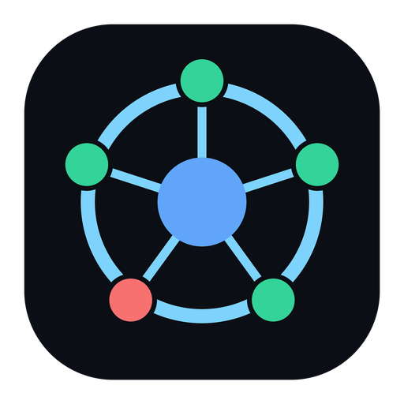

Orchestra
Daily driver. Cyan brand, normal logo, empty user data. Detects the CLIs already installed on that computer and lets you start them on the canvas.

AI ORCHESTRAOrchestra is a desktop workspace OS: live Claude / Codex / Cursor / shell sessions on a canvas, connected to project folders, routed by role, cost and quota. QA is decided by the real test runner — never by a model claiming “it passed”.
Windows NSIS installer · Electron 44.7.0 · no Node required on the target machine
Two Windows flavours. They use different product names, icons, colours and AppData folders, so both can sit on the same machine.
Daily driver. Cyan brand, normal logo, empty user data. Detects the CLIs already installed on that computer and lets you start them on the canvas.
One-time 0.1.0 development build. Amber theme, faded logo, title Test Orchestra, and every current markdown / handover file bundled under Help. Use this on the other computer while you keep shipping the normal app.
Published copy: https://hero-999-dev.github.io/ai-orchestra-web/
Right-click anywhere on the canvas. Talk to a CLI inside its box. Assign work without leaving the desk.
Each box is an embedded terminal. Start Claude, Codex, Cursor agent or a shell in the connected project folder — no extra PowerShell window.
Empty canvas, a CLI, or a project diamond: add a node, assign a task (Solo / Orchestra / Ask), start or stop a session, run QA, re-detect CLIs.
A live session has an input bar at the bottom of the box. Type a line, press Enter, it goes to that CLI. The xterm is still there for the full TUI.
On launch (and every 60s, or F5) Orchestra probes PATH. Missing CLIs show “missing on this computer” and cannot be started. Reinstall and they come back.
Drag a CLI’s ● port onto a project diamond and tag it Reasoning, Coding, Testing, Review or Shell. Layout persists in local SQLite.
Mistral-first QA (2 attempts) against the real test runner, then Composer or Claude. Grok stays a protected reasoning reserve on the shared Cursor pool.
claude, codex, agent, and a shell.Architecture, routing scores, quota reserve, QA escalation, daemon API, config, tests, and the checklist for the next AI. Same self-contained page that ships inside Test Orchestra.